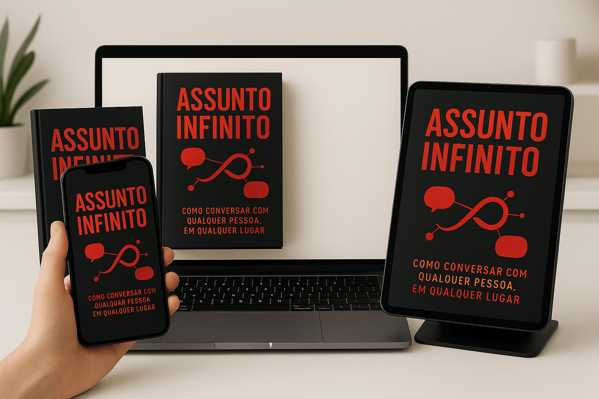

Foi com esse método egoísta que 8 mulheres da minha faculdade se apaixonaram por mim
Já imaginou fazer qualquer pessoa se apaixonar por você?
- Tenha a opção de escolher a mulher que você realmente quer!
- Entenda como fazer qualquer pessoa se interessar por você!
- Aprenda a fazer amigos em todo lugar que você passar!
O assunto infinito é para você que...
- Sempre sonhou e ter nascido uma pessoa desenrolada ao invés de alguém que trava
- Fica nervoso e não sabe o que dizer pra conseguir se aproximar dela
- Não sabe nem como se aproximar porque não sabe o que dizer
- Não entende como tem gente que desenrola tão fácil, mas por alguma razão pra você é muito difícil
Enfim...
Se você tá cansado de ficar sempre na arquibancada e nunca ter papo, sempre chegar alguém e tomar ela de você bem na sua frente, então o Assunto Infinito é pra você!
Alunos que desbloquearam a arte de ter lábia:


E como vai funcionar?
Passo 1: O interesse genuíno:
Aqui eu vou te ensinar como fazer perguntas certas, como ouvir de verdade, e como transformar qualquer resposta em uma nova linha de conversa.
Passo 2: Perguntas que Nunca Acabam:
Esse capítulo vai ser um arsenal de perguntas abertas, perguntas de aprofundamento, e perguntas de improviso. Vou mostrar como usar perguntas pra puxar assunto, pra aprofundar, pra mudar de tema sem ser forçado, e até pra sair de situações chatas. Tudo com exemplos reais, diálogos simulados, e dicas pra adaptar pra qualquer pessoa.
Passo 3: Histórias que Conectam:
Aqui vou ensinar como transformar qualquer experiência em história interessante, como usar detalhes pra prender atenção, e como contar histórias que fazem o outro querer participar. Vai ter técnicas de storytelling, exemplos de histórias curtas e longas, e exercícios pra treinar a arte de contar e ouvir histórias.
Passo 4: Gatilhos Mentais na Conversa:
Esse capítulo é pra quem quer ir além do básico. Vou mostrar como usar gatilhos mentais (curiosidade, novidade, emoção, reciprocidade, etc.) pra manter o papo vivo, criar conexão instantânea, e fazer o outro lembrar de você. Tudo com exemplos práticos, frases prontas, e dicas de como usar sem parecer artificial.Passo 5: O Jogo do Improviso:
Pra fechar, vou ensinar como nunca travar, mesmo quando o assunto parece acabar. Técnicas de improviso, como usar o ambiente, como puxar assunto do nada, como lidar com silêncios, e como transformar qualquer situação em oportunidade de conversa. Vai ter exercícios, desafios, e dicas pra treinar o improviso no dia a dia.E com esses 5 passos você vai:
- Entender como ser tornar desenrolado
- Vai perder gradualmente o nervosismo
- Vai sempre saber o que dizer, e vai poder conversar com qualquer pessoa sem travar
- Desenrolar pra você vai se tornar fácil e natural
Mas não é só isso! Você Também vai Ganhar Dois Bônus Exclusívos Por Tempo Limitado 🚨
Técnicas baseadas em neurociência e psicologia que te ajudam a controlar a timidez na hora de chegar na mina. E te ensina a chegar sem precisar de frases prontas ou joguinhos manjados.
Valor: R$ 19,00 - Seu de GRAÇA hoje!
Já viu uma mina linda na rua durante o carnaval? Já pensou em ir pra uma festa e pegar geral? Isso é possível e tem técnica pra isso (mas só devem ser usadas nesses locais).
Valor: R$ 10,00 - Seu de GRAÇA hoje!
Tenha sempre assunto
- Protocolo: Assunto Infinito
- Acesso permanente ao protocolo
- Bônus #1: Como chegar na mina sem ser esquisito
- Bônus #2: Guia pra chegar fácil no beijo
Acesso imediato • Recebimento via e-mail
Garantia Incondicional de 30 Dias
Experimente o Método do Assunto Infinito por 30 dias com ZERO RISCO. Se você não ficar completamente satisfeito com os resultados, basta enviar um e-mail solicitando reembolso e devolveremos 100% do seu investimento. Sem perguntas, sem burocracia.
Perguntas Frequentes
Você é a única pessoa que pode se fazer se dar bem
Acesso imediato • Garantia de 30 dias